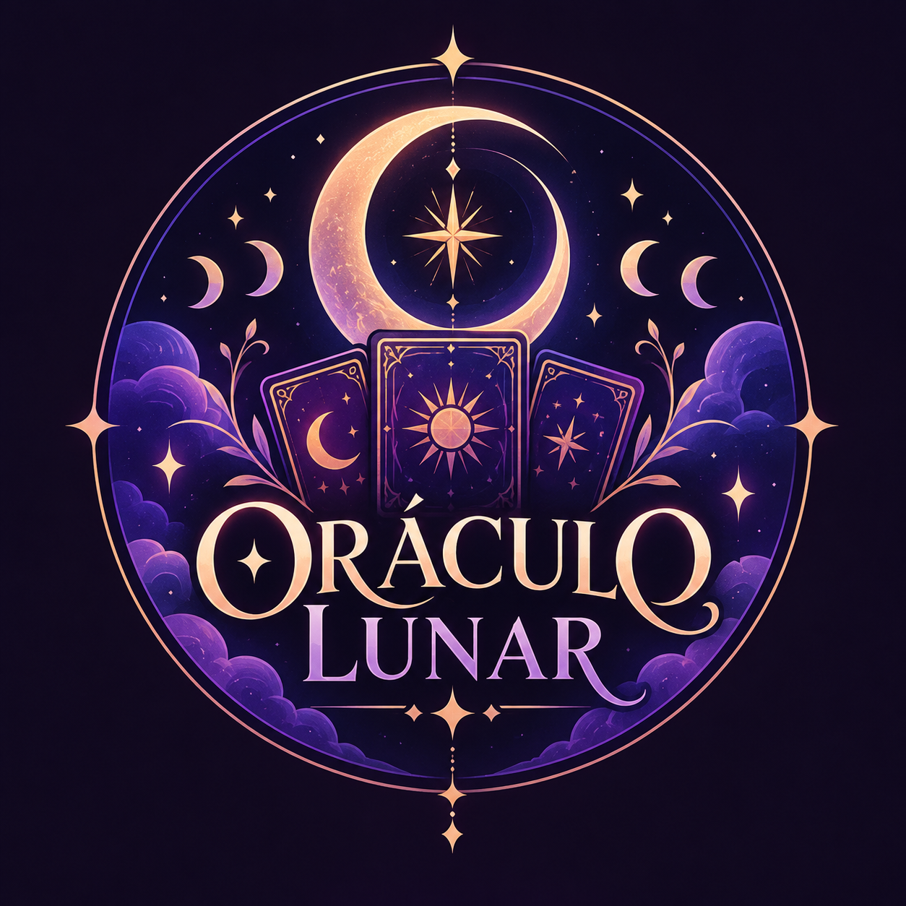

O Arcano Pessoal é um arquétipo e uma carta de referência dos Arcanos Maiores do Tarô associada a cada pessoa por meio de um cálculo numerológico baseado na data de nascimento e, em alguns métodos, no nome completo. Com raízes na Cabala, na numerologia e na taroterapia, ele funciona como um "código" ou bússola de autoconhecimento, ajudando a entender tendências de comportamento, potenciais e lições de vida.
Video que explica mais afundo sobre o arcano pessoal:
O cálculo do Arcano Pessoal mais comum é feito somando todos os números da sua data de nascimento (dia, mês e ano). O objetivo é reduzir essa soma a um número entre 1 e 22, que corresponde aos 22 Arcanos Maiores do Tarô.
Quando a soma já dá menos de 22(Ex.:Nascimento em 12/03/1995)